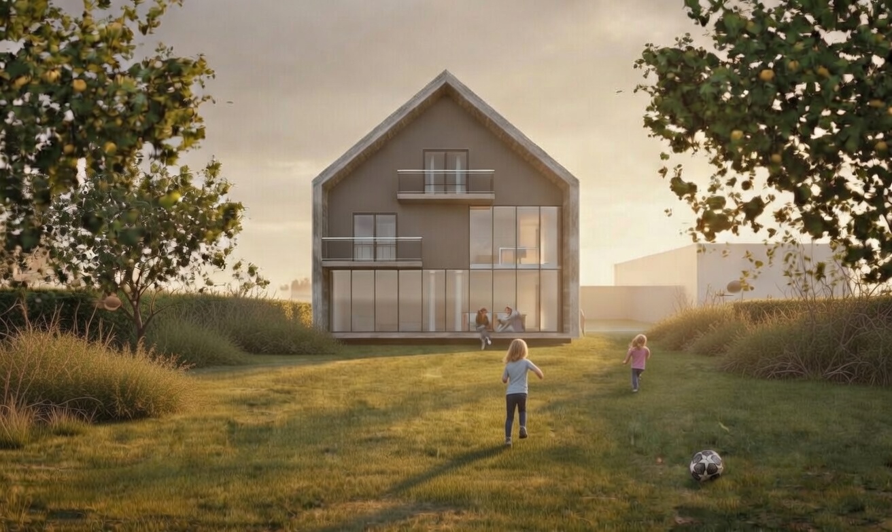
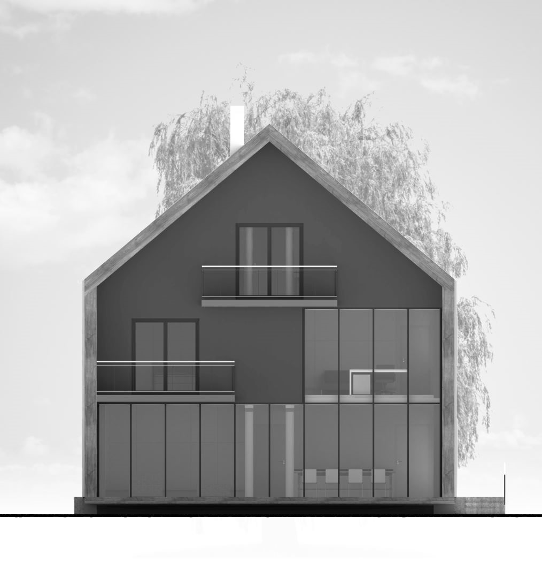
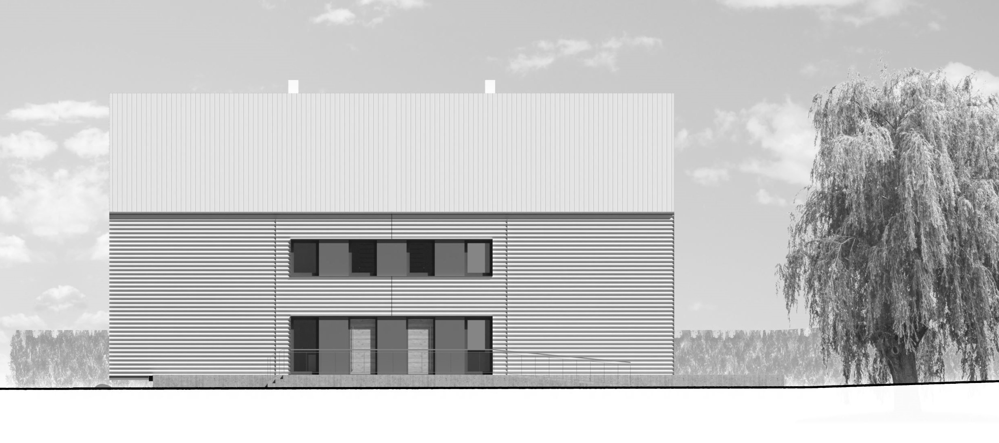
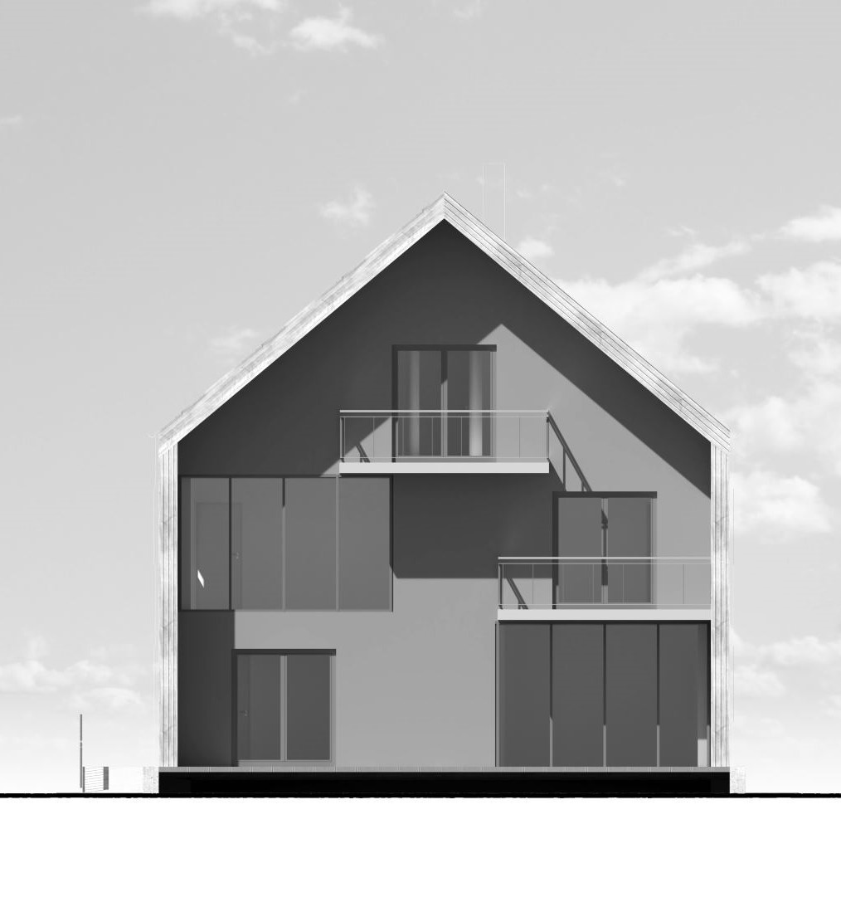
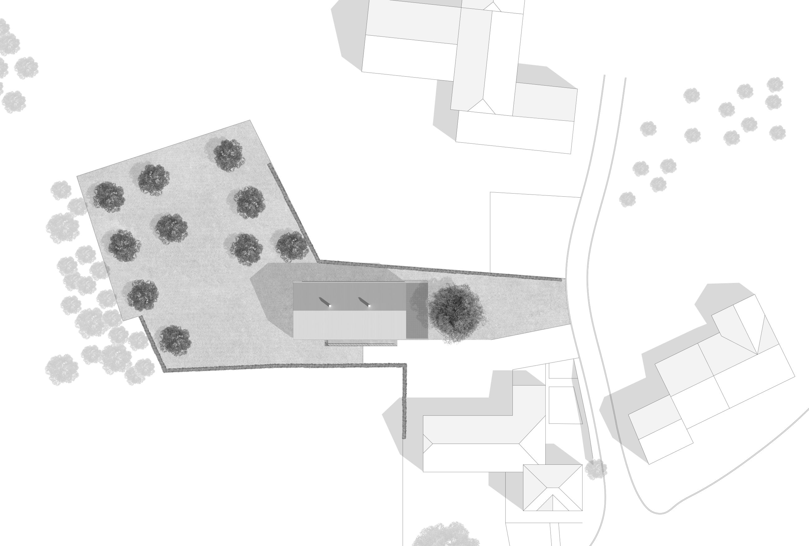
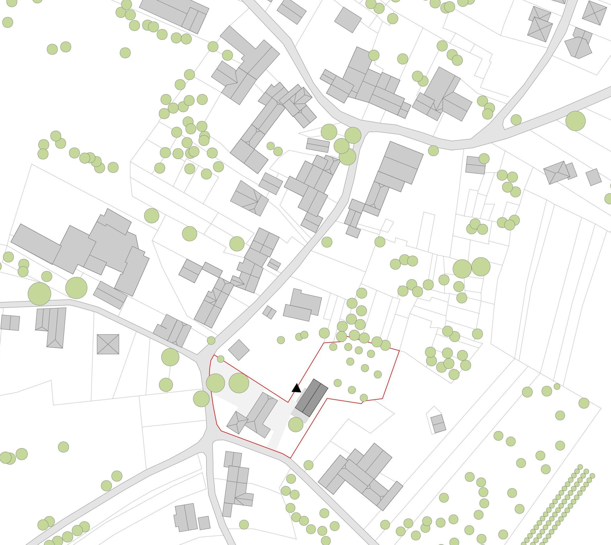
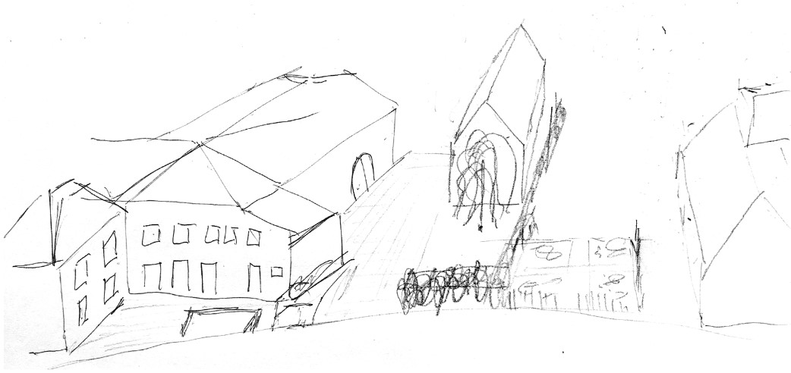

A modern reinterpretation of the Trierer Einhaus — a traditional farmhouse typology of the Saargau region. The living barn responds to its context through form, material, and scale, without replicating tradition.
The site sits between two 19th-century farmhouses. Designed as a double house with a corrugated metal facade, the building complements the existing ensemble while speaking the language of contemporary construction.
The identity of a village is strongly influenced by its environment and history. Only in recent decades have humans had the ability to overcome the constraints of locality — knowledge and materials are now globally accessible, and traditional construction methods can be replaced by industrial production.
This progress has resulted in a loss of identity for traditional settlements. Vernacular architecture does not mean sticking to traditions — it involves finding the essence of a place while making use of the possibilities offered by the technology of our time. In the Saargau region, the "Trierer Einhaus" features an elongated form with living house, stable, and barn aligned — a clear geometric order shaped by Roman settlement patterns.






